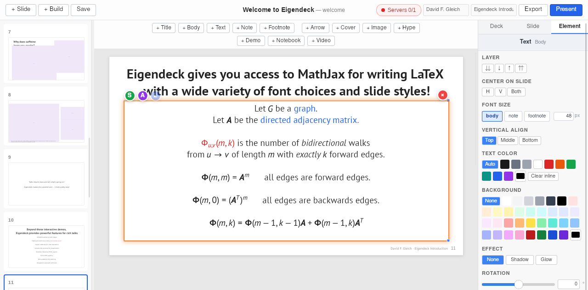
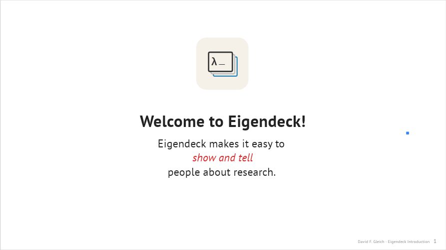
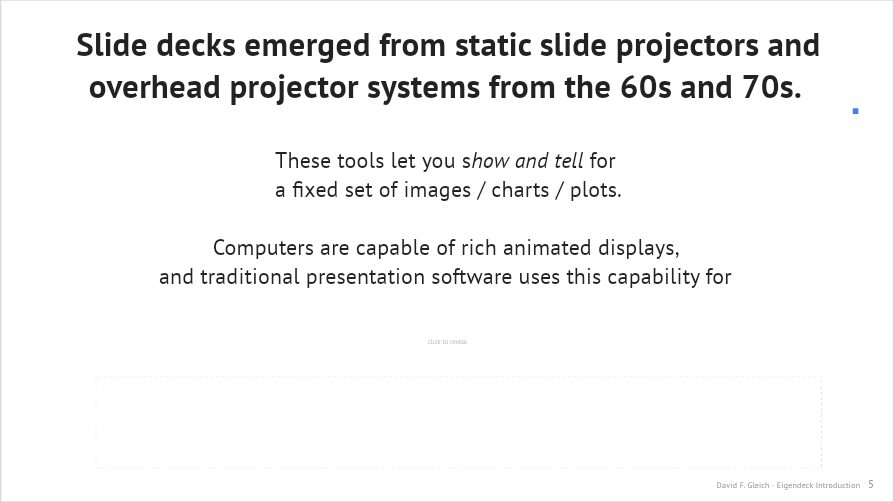
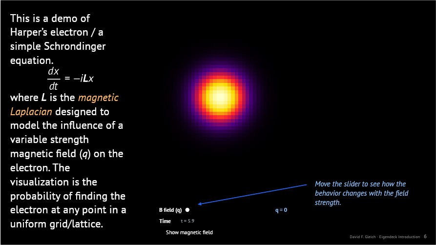
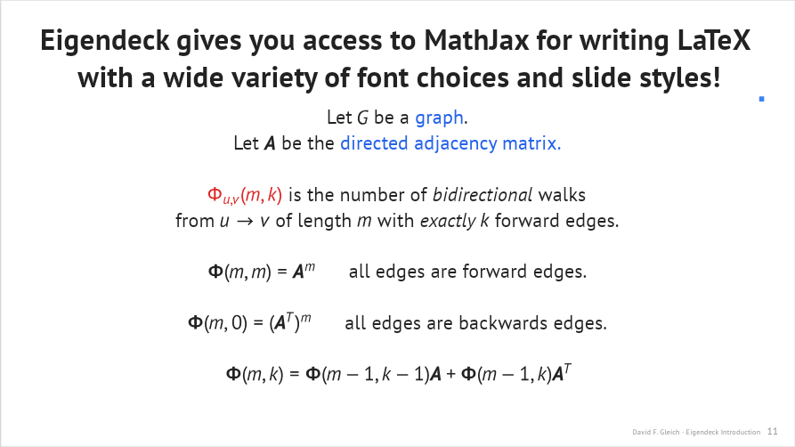
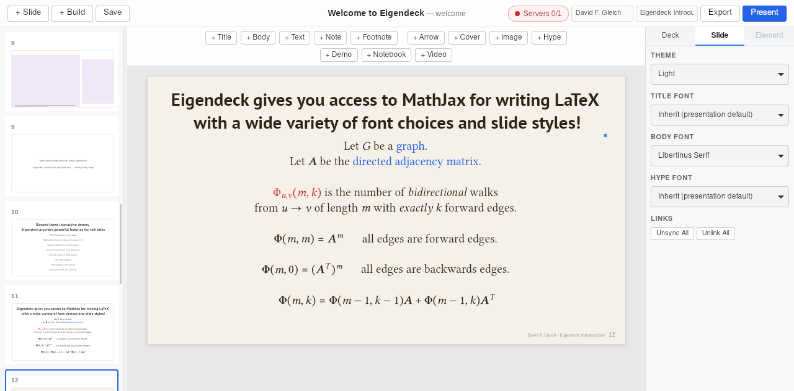
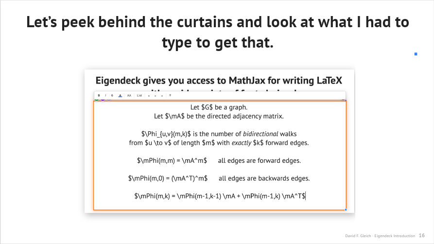
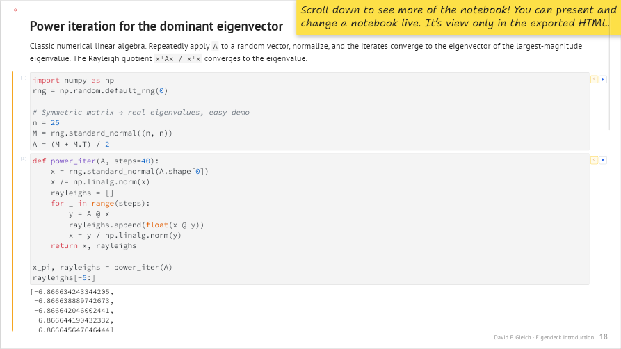

Building a presentation
The best way to learn Eigendeck is to see how a real deck is put together. This walkthrough follows the built-in Welcome to Eigendeck deck slide by slide and explains how each one was constructed — which elements, which presets, and the techniques (build slides, reveal masks, sync/link, per-slide fonts) behind them.
Open the deck yourself to follow along: it ships in
examples/welcome.eigendeck. Every screenshot below is that slide as it appears in the editor.
The deck has a simple arc: introduce the idea (show and tell) → make the argument → prove it with three live demos → tour the features → peek behind the curtain → sign off.
The editor at a glance

Four regions, every time:
- Slide sidebar (left) — every slide as a thumbnail; drag to reorder, right-click for Duplicate / Build Slide / Delete.
- Insert toolbar (top) — one button per element type (Title, Body, Text, Note, Footnote, Arrow, Cover, Image, Hype, Demo, Notebook, Video). The same items live in the Insert menu.
- Canvas (center) — the 1920×1080 slide. Drag elements freely; the selected one shows a handle box (and small S / A / L badges if it's synced, animated, or linked across slides).
- Inspector (right) — three tabs: Deck (presentation-wide settings — default fonts, theme, text sizes, math macros), Slide (this slide's theme and fonts), and Element (the selected element's properties). It's open by default; toggle it with View → Toggle Inspector.
Coloring text — and the math comes along
Inline math renders in the current text color, so coloring text colors its math
too. The red Φ and the blue "graph" / "directed adjacency matrix" on this slide
were done with inline spans: while editing the element, select the run
(including any $…$) and pick a color from the text-editor format toolbar —
the MathJax in that run picks up the color. Clear inline (in the Element
inspector) strips those per-run colors again.
To recolor the whole element uniformly instead, use the Text Color control in the Element inspector (shown above). The same panel carries Background (a panel behind the text), Effect (shadow / glow for legibility over busy slides), vertical alignment, rotation, and Position & Size.
1. Title and the "show / tell" opening (slides 1–3)

Slide 1 is the simplest thing in Eigendeck: a Title text element, a
Text Box below it, and an image (the logo SVG). Insert each from the
Insert menu (or the toolbar), then drag them into place on the canvas. The
title uses the title preset; the sentence uses textbox. The logo is an SVG
dropped in via Insert → Image — Eigendeck embeds it in the deck and keeps
watching the file on disk so you can re-edit it (see watched assets).
Slide 2 ("… Show …") puts a live demo next to a one-word title — the
"show" half. The demo is split into two pieces (a plot and a panel) positioned
separately. Slide 3 ("… And Tell …") is the "tell" half: a title plus a
body element containing real LaTeX ($\vp_1,\dots,\vp_N$ …) rendered by
MathJax. Type math inline with $…$; it renders in the slide's font.
The
\vp,\mXetc. are macros defined once for the deck (Presentation properties → math preamble) so you can reuse them everywhere.
2. The argument, with build slides and reveal masks (slides 4–8)
These slides make the case that slide decks inherited a "static projector" shape and that computers can do more. Two techniques carry them:
- Build slides (slide groups). Slides 4–5 and 6–8 are groups — a base slide plus "build" copies that share numbering and reveal more each step. Duplicate a slide as a Build Slide (Slide menu, or right-click in the sidebar) and add the next piece; in presentation they advance as one numbered step.
- Cover rectangles as reveal masks. A Cover element is a rectangle that defaults to the slide background color, so it's invisible — drop it over text you want to reveal later, then remove it on the next build slide. (You can also tint a cover any color from the inspector.)

Slide 6 adds a demo to the group: the same text, now with an interactive piece appearing alongside it. That's a build slide doing its job — the audience sees the point made, then the demonstration.
3. Three live demos (slides 9–11)
This is the heart of the deck — three interactive demos, each made in an LLM session and dropped onto a slide. See Building demos with LLMs for exactly how these are produced.

Slide 9 — Harper's electron. A Schrödinger simulation. The demo is split into
a probability heatmap piece and a controls piece (the slider). They're
positioned independently and communicate over BroadcastChannel. The slide adds
a Text Box with the governing equation $$\frac{dx}{dt} = -i\mL x$$, an
annotation ("Move the slider…"), and an arrow pointing at the control.
Note the slide's theme is black — set per-slide in the Slide inspector — and
the demo's controls automatically adopt readable colors via the injected theme
variables.
Slide 10 — caffeine / adenosine. A molecule viewer piece plus a panel.
Slide 11 — graph community structure. Three pieces (graph, controls,
info) with a footnote explaining what you're exploring. Same pattern:
multiple pieces from one HTML file, arranged on the slide.
4. The pitch and the feature tour (slides 12–18)
Slide 12 is a plain statement ("Talks should show and tell"). Slide 13 lists features. Then slides 14–18 are the same math-heavy slide repeated in four different fonts — Libertinus, Computer Modern Sans, Computer Modern Concrete, and Shantell Sans — each with its own theme:

To make these, build the slide once, then duplicate it and change the Theme and Body font in the Slide inspector tab:

Each font ships with a matching MathJax math font, so the equations re-render to belong with the text — the math on the Shantell slide looks hand-drawn too. The Shantell slide adds an annotation giving the author's honest take on it. See styles and fonts.
5. Behind the curtain (slides 19–20)

These slides show the editor itself — a raster image screenshot of Eigendeck — with an annotation and an arrow pointing at a math macro in the inspector. A nice trick for a tool talk: screenshot your own UI, drop it in as an image, and annotate it with arrows and notes.
6. Notebooks (slides 21–22)

Slide 22 embeds a real Jupyter notebook element — scrollable, and editable during the talk (it's view-only in the exported HTML). A hype note (the sticky-note preset) tells the audience to scroll. Eigendeck records the notebook in the deck without touching your source file; see notebooks.
7. Credits and sign-off (slides 23–24)
Slide 23 credits the open-source software and fonts Eigendeck is built on. Slide 24 is a closing Text Box and the logo again — mirroring the opening.
What you just learned
Putting this deck together exercises essentially the whole toolset:
| Technique | Where | Reference |
|---|---|---|
| Text presets (title / body / textbox / note / footnote / hype) | throughout | elements |
| Inline LaTeX + deck math macros | slides 3, 9, 13–18 | styles and fonts |
| Interactive demos (multi-piece) | slides 2, 6, 9–11 | building demos with LLMs |
| Build slides / slide groups | slides 4–8 | — |
| Cover rectangles as reveal masks | slides 4, 6 | — |
| Annotations + arrows | slides 9, 19 | elements |
| Per-slide fonts + themes | slides 14–18 | styles and fonts |
| Images (SVG + raster), watched on disk | slides 1, 19, 24 | watched assets |
| Jupyter notebooks | slide 22 | notebooks |
Then make it your own — change the text, swap the demos, pick your fonts.